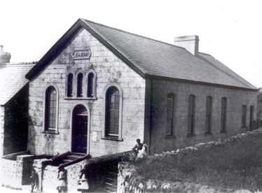

Tabor – Capel Bedyddwyr
Bu’r achos yn Llithfaen yn gysylltiedig â Thyddyn Sion ac fe ddechreuodd yr achos o ddifrif yn Llithfaen tua 1812 gan 12 o aelodau dan arweiniad Simon James, Sir Benfro. Yn ôl Y Genedl Gymreig, yn 1883, daeth tyrfa fawr ynghyd o bell ac agos i osod y garreg sylfaen i’r capel newydd. Mae Bob Owen, Croesor yn sôn am Robert Jones, Tŷ Capel y Bedyddwyr Llithfaen fel hen bregethwr duwiol ac eneiniedig yn pregethu i gapel llawn yn Llanfrothen bob tro y deuai yno.
Tabor, Capel y Bedyddwyr